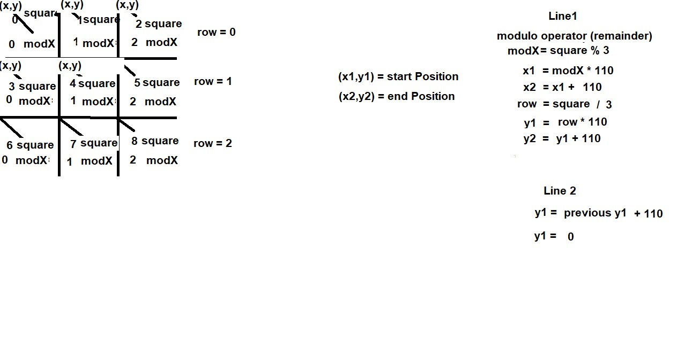

How to draw an X in a tic-tac-toe square
This math will show the relationship between selected square and start/stop position required to draw lines in a square:
- The number of the square starts at 0 in the upper left
- The start position (x1,y1) and end position (x2,y2) are determined based on the number of the square
